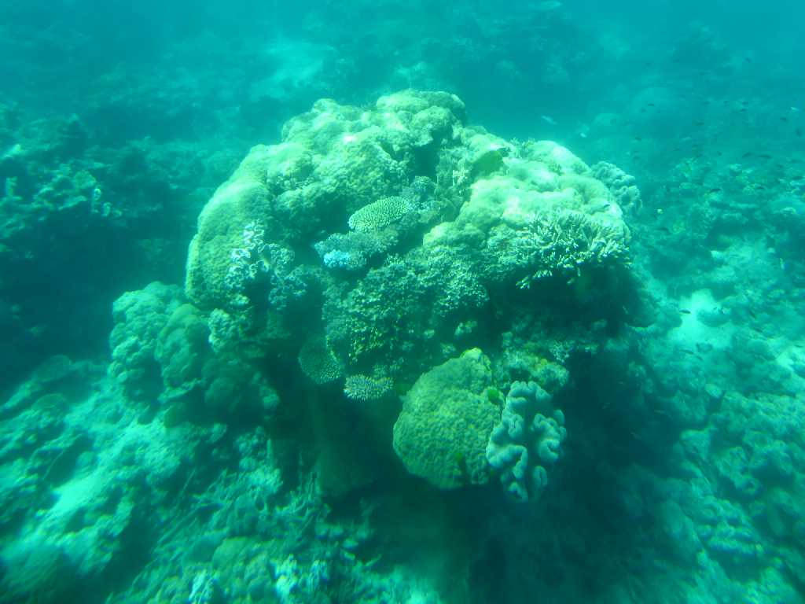
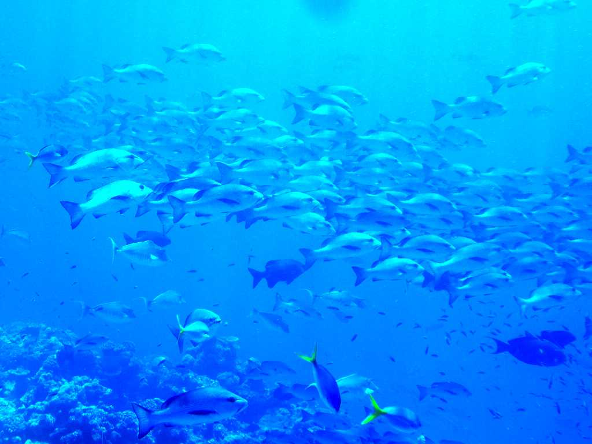
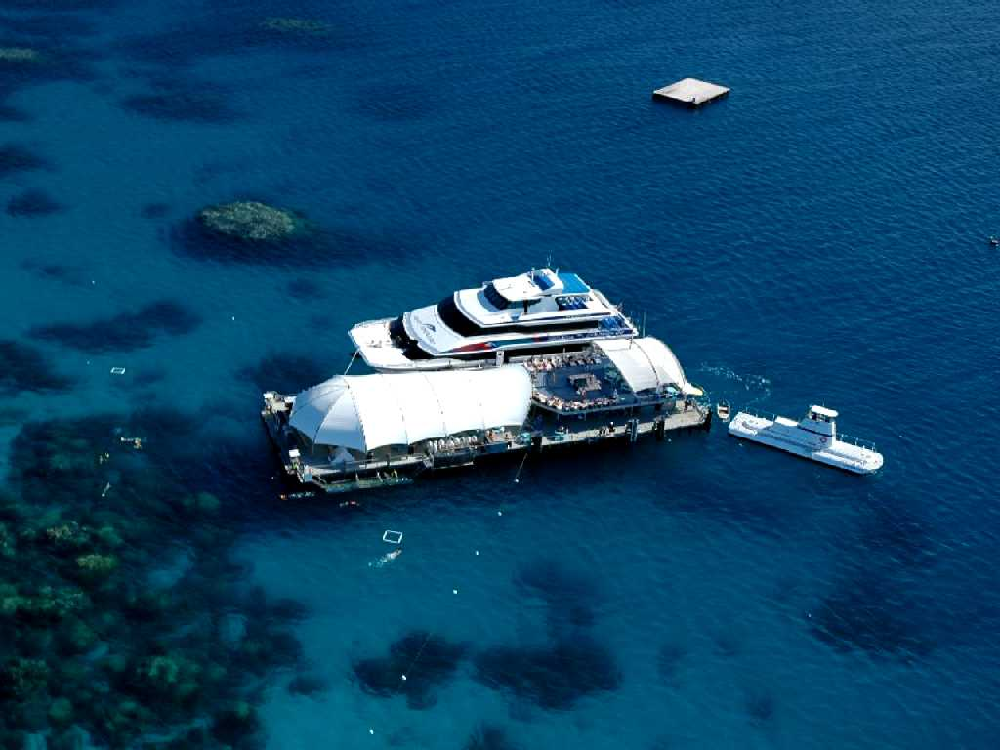
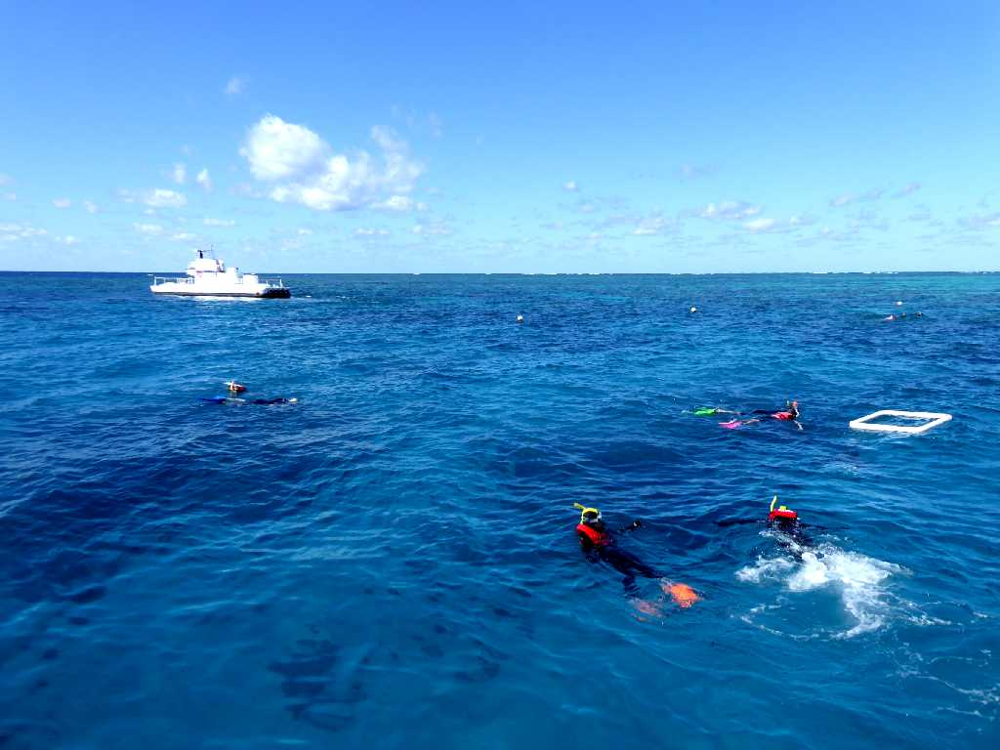
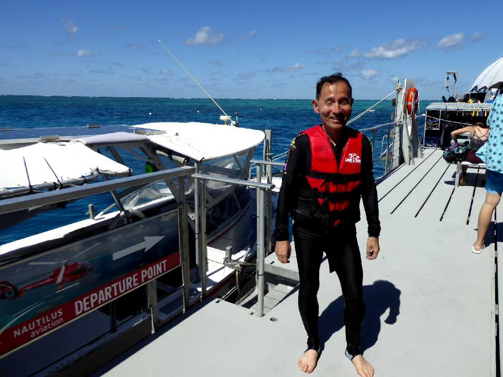

Coral Norman Reef Great Barrier Reef
潜らない観光潜水艦から観れる世界最大のサンゴ礁グレートバリアリーフの大サンゴ

Fish Norman Reef Great Barrier Reef
大サンゴ礁に集まる多くの魚達

Pontoon Norman Reef Great Barrier Reef
グレートバリアリーフのノーマンリーフにある浮桟橋と観光潜水艦

Snorkel Pontoon Norman Reef
ノーマンリーフでサンゴ礁を観るシュノーケル

September 4 2019 Norman Reef